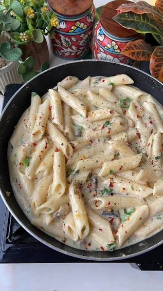

White pasta

Overview
- Prep Time: 10 minutes
- Cook Time: 20 minutes
- Difficulty: Easy
- Servings: 2
Ingredients
- Pasta. 200 g (about 2 cups) of penne, fusilli, or macaroni.
- Water and salt. 4 to 5 cups of water with 1 teaspoon of salt for boiling.
- Butter or olive oil. 1 tablespoon for sautéing the vegetables.
- Mixed vegetables (optional). 1 cup total of finely chopped bell peppers, carrots, sweet corn, broccoli, or sliced mushrooms.
- Butter. 2 tablespoons of unsalted butter.
- Garlic. 2 to 3 cloves, finely minced.
- Flour. 2 tablespoons of all-purpose flour (maida).
- Milk. 1½ cups of full-fat milk at room temperature or slightly warm.
- Cheese. 3 to 4 tablespoons of grated parmesan, cheddar, or processed cheese.
- Seasonings. ½ teaspoon dried oregano (or mixed Italian herbs), ½ teaspoon red chili flakes, ¼ teaspoon black pepper powder, and salt to taste.
Procedure
- Boil the pasta. Bring water and salt to a rolling boil, add the pasta, and cook until al dente (firm to the bite) according to package instructions. Reserve ¼ cup of the starchy pasta water, then drain the rest and set the pasta aside.
- Sauté the vegetables. Heat 1 tablespoon of butter or oil in a pan over medium heat. Toss in your chopped vegetables with a pinch of salt and sauté for 3 to 4 minutes until tender yet slightly crisp. Transfer them to a plate.
- Make the roux. In the same pan over low-medium heat, melt 2 tablespoons of butter and sauté the minced garlic for 30 seconds until fragrant. Stir in the all-purpose flour and whisk continuously for 1 minute until it bubbles and loses its raw smell without browning.
- Whisk in the milk. Lower the heat and pour in the milk gradually while whisking constantly to prevent lumps. Simmer gently for 3 to 4 minutes, stirring often, until the sauce thickens enough to coat the back of a spoon.
- Season and finish. Stir in the grated cheese, oregano, chili flakes, black pepper, and salt until the cheese melts smoothly. Add the sautéed vegetables and boiled pasta, tossing well to coat everything evenly. If the sauce gets too thick, splash in a little of the reserved pasta water to loosen it.
- Serve. Plate immediately and garnish with extra grated cheese and chili flakes.
Home